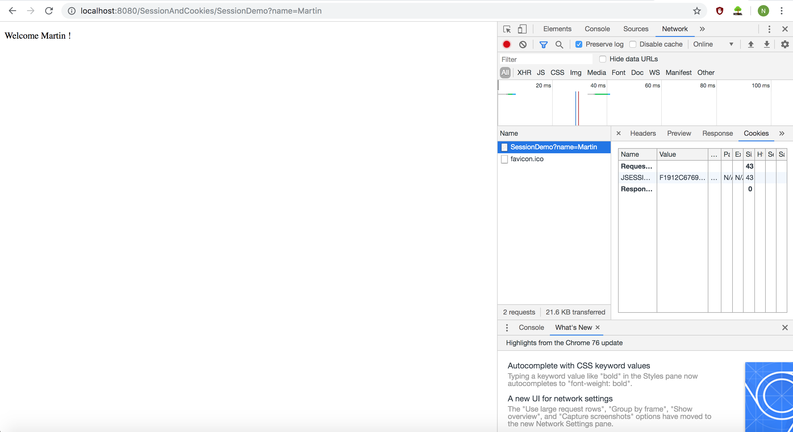

- What is your public IP address right now, and how did you find it?
5.179.80.204 (http://myip.dk).
- What is your private IP address right now (do this both at home and in school), and who/what gave you that address?
10.50.138.166 (School).
192.168.0.188 (Home).
- What’s special about these address ranges?
- 10.0.0.0 – 10.255.255.255
- 172.16.0.0 – 172.31.255.255
- 192.168.0.0 – 192.168.255.255
Reserved for privat networking not routed through the internet.
- What’s special about this ip-address: 127.0.0.1?
Localhost.
- What kind of service would you expect to find on a server using these ports: 22, 23, 25, 53, 80, 443?
- 22 – SSH remote login protocol.
- 23 - Telnet.
- 25 – Simple Mail Transfer Protocol (SMTP).
- 53 – Domain Name System (DNS).
- 80 - HTTP.
- 443 - HTTPS.
- What is the IP address of studypoints.dk and how did you find it?
157.230.21.145 (nslookup studypoints.info).
- If you write https://studypoints.dk in your browser, how did “it” figure out that it should go to the IP address you discovered above?
It asks the DNS server.
- Explain shortly the purpose of an ip-address and a port-number and why we need both
The ip-address directs to the server and the port directs to a specific application on the server.
- What is your (nearest) DNS server,?
Local on my desktop.
- What is (conceptually) the DNS system and the purpose with a DNS Server?
The DNS link an easy to read domain name to an ip-address.
- What is your current Gateway, and how did you find it?
10.50.128.1 (netstart -nr | grep default).
- What is the address of your current DHCP-Server, and how did you find it?
10.255.1.10 (ifconfig -a) (ipconfig getpacket en0) where en0 can be vary.
- Explain (conceptually) about the TCP/IP-protocol stack
The transport layer uses TCP to devide data to segments and sends the segments to internet layer. Internet layer uses IP and devides the segments from transport layer to data packages and sends them to Datalink layer.
- Explain about the HTTP Protocol (the following exercises will go much deeper into this protocol)
HTTP is an application protocol for distributed, collaborative, hypermedia information systems. HTTP functions as a request-response protocol in the client-server computing model. A web browser for example, may be the client and the application running on a computer hosting a website may be the server. The client submits an HTTP request message to the server. The server, which provides resources such as HTML files and other content, or performs other functions on behalf of the client, returns a response message to the client. The response contains completion status information about the request and may also contain requested content in its message body.
- Explain (conceptually) how HTTP and TCP/IP are connected (what can HTTP do, and where does it fit into TCP/IP)
Data coded according to application layer protocols are encapsulated into transport layer protocol units such as TCP, which in turn use lower layer protocols to effect actual data transfer.
- Monitoring HTTP Headers 1
Vi ser en 200 ok så den er gået igennem og det er en get metode som har Hello World! i body. Efter rename til index1.html får jeg 404 fejl.
- Monitoring HTTP Headers 2
Meningen med connection header er at du kan navigere rundt i dine filer. Vi tilføjede et css og derved kom der en request efter vores css hvor vi så fik svar og kan se vores css
i denne url.
- Monitoring HTTP Headers 3
Vi ser de 2 requests hvor redirect har en status kode på 302 hvilket betyder den er flyttet midlertidigt og i response headeren har redirect også en location der er navnet på vores anden request nemlig r.html. r.html har så en status kode på 304 hvilket står for ikke modificeret og det vil sige der ikke er behov for at videresende de efterspurgte ressourcer (dette er endestationen).
- Redirecting to HTTPs instead of HTTP
Vi ser på det ene request at det har status kode 301 hvilket er at vi bliver flyttet permanent og derfra bliver vi flyttet fra http til https.
- Status Codes a
500.
- Status Codes b
404.
- Status Codes c
302 - Midlertidig flyttet.
304 - Ikke modificeret(endestation).
301 - Permanent flyttet.
500 - Intern serverfejl.
404 - Dødt link.
- Get HTTP Request Headers on the Server
Opgaven kan findes her.
- Get/Post-parameters
Get metoden: Indsætter værdierne i firstname og lastname til de indtastede værdier og så sender det den skjulte værdi med også. Vi ser også at den afslutter med # fordi dette er stedet vi ønsker at sende vores data hen.
Post metoden: Igen indsætter metoden værdierne i firstname og lastname samt gemmer vores skjulte værdi. Forskellen her ligger i at get metoden sender det med igennem url’en hvor post metoden sender det igennem html body. Derved er post metoden meget mere sikker til sensitiv data sendinger.
- Session and Cookies
Browseren gemmer det indtastede navn i en session og derfor kan du ikke skrive et nyt navn ind fordi der allerede er en igangværende session. Hvis du i stedet lukker browseren får du mulighed for at indtaste navnet på ny og derved oprettes en ny session.

Her kan vi se den cookie der bliver oprettet første gang vi indtaster navnet.

Her kan vi se at cookien stadig er den samme selv efter browseren har været lukket se url.
- Persistent Cookies
Cookie bliver gemt local og forsvinder først på en bestemt dag(typisk 2 år efter oprettelsen) og bliver kun gemt i den browser du har brugt til at gemme cookien fx chrome browser gemmer en cookie men safari browser skal gemme sin egen cookie.